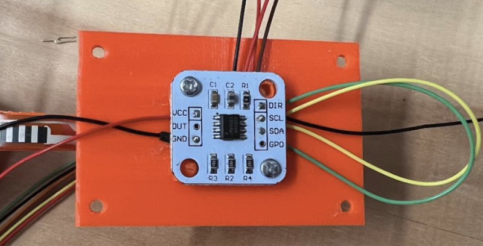

Tethered Robots
Collective Embodied Intelligence Lab, PI: Kirstin Petersen
May - December 2024
Grade: A+
This project was completed as part of my Masters of Engineering Research. I worked on the electric and mechanical design and implemented the software for a series of tethered robots. This project was based on the simulation research by PhD student Sadie Cutler. My contributions to this research proposal are in the process of being published.
The objective of this Masters of Engineering project is to design, build, and test a series of robots that are connected by tethers.
Results
Five Robots (Final Design) Robot Design and Tested Force DataA) CAD design for one robot
B) One assembled robot
C) Cantilever and magnetic encoder assembly
D) Force and strain for different cantilever angles
Three Robots Changing Angles (Time in seconds)A) 90 Degrres to 180 Degrees
B) 270 Degrees to 180 Degrees
Design Process
Base Design
The base of the robot consists of a 3D printed base plate made from Hatchbox True Blue PLA printing filament. The base plate is printed in one piece. On the base plate there are designated areas for the motor drivers, motor batteries, Artemis board, and Artemis battery. There are also through holes to mount the two motors and the two ball casters to the base. To prevent the robot from wobbling back and forth, a spacer was added to each ball caster. The height of the spacer was 1mm for 3 robots. Due to slight differences in each 3D print and assembly, one robot used 0.5mm spacers and another used 2mm spacers to achieve stability. In addition, there is a raised back edge and locations for bump sensors along the front of the robot that will be implemented in the future. Below is a diagram of the CAD model for the base and spacers.
Previous Base Design
Before achieving the above design, a previous robot base was tested. This design used smaller motors which allowed the wheels to be located in the center of the base. The smaller motors also allowed the cantilever stand to be shorter than in the final design. This robot was tested and due to its light weight when tension was applied to the tethers as the wheels were spinning, the wheel that was rotating in the direction of the tension rotated more than the other wheel. The tension caused the robot to be pulled along the floor. This issue was addressed by adding weight to the robot to prevent the robot from sliding. Weight tested included sand, lead balls, and coins. I decided to use coins for efficiency and safety reasons. After adding weight to the robot it was determined that tension was not the only issue and stronger motors that prevented unwanted wheel rotation were needed. The initial design was changed to the design mentioned in the previous section.
The following data was collected to analyze sliding for the previous design using a push pull meter. The peak cantilever data was the data collected from pulling the cantilever from rest to 1.6 cm. The robot movement data was collected when the cantilevers were pulled in the direction parallel to the wheels, perpendicular to the wheels, or at the angle in line with the cantilever stand.
Tether and Angle Detection
The tether and angle detection components are secured on top of the base plate. The two cantilevers are printed from PETG and hold the flex sensor. The flex sensor is attached to the cantilever using tape and the end of the flex sensor is placed into the end of the cantilever under the 3D printed bars as seen in Figure 17. This prevents the flex sensor from buckling when the cantilever bends. The flex sensors are calibrated to read angles from 40 degrees (in tension) to 90 degrees (at rest).
Ultra-thin bearings are used to allow the cantilevers to rotate. The bearing and cantilever are secured using 3D printed sensor holders made from PLA and are secured to a support plate attached to the base of the robot. There are two pieces for each sensor holder (four components in total) and one support plate. The angle of rotation for the cantilever is read by an encoder. There are two magnetic encoders on each robot, one below each cantilever. A magnet is glued to a spacer that is glued to the slip ring of the cantilever. The magnetic encoders are calibrated individually for each robot. The flex sensors and encoders are connected to the Artemis board using slip rings to allow for the cantilevers to rotate 360 degrees. The wiring diagram is in the next section. Images of the magnet, spacer, and encoder are below.
When printing the cantilevers, arrange the cantilevers on their side and only print with support material on the base plate.
When printing the sensor holders, orient the holders so that the holder faces upwards to prevent support material from being placed inside of the opening to hold the bearing.
Flex Sensor Testing
The flex sensors were tested before building any of the robots. The steps for testing the flex sensors on the cantilever are below along with images of the testing setup.
- Secure cantilever into the holding box and connect to Artemis board
- Rest tether next to the first raised platform and mark with a Sharpie
- Calibrate at 90 degrees – rest position
- Calibrate at 30 degrees – around increment 4
- Test remaining increments (each are 0.4cm apart at their center); Line up the marked position on the tether with each groove

I tested three different cantilevers at each of the same positions. I pulled the tether with my hand to move the marked point to the desired position and remained stationary for around 20 seconds before moving to the next position. Each test was repeated four times. Below is a graph of one of the tests and a graph of four tests done on the same cantilever. The results show that the flex sensor is capable of reading consistent angles.
Previous Cantilever Designs
In addition to testing the single magnet that came with the magnetic encoder, a ring magnet was tested. Using the ring magnet resulted in inaccurate angle readings. For this reason, a decision was made to use the small single magnet that comes with the encoder.
Previously, the tether was designed without any grooves along the bend, which resulted in the cantilever only bending at the very end. This previous design was modified to allow the cantilever to bend at the hinge point. In addition, the previous design did not include the bars at the end of the cantilever to hold the flex sensor and relied on tape to secure the flex sensors at the end of the cantilever. This design was modified to allow the flex sensors to slide along the end of the cantilever without buckling.
Software Notes
The objective of the implementation of the software is to maintain tension in the tethers, while still having the capability of changing the angle between the cantilevers of the robot. The five robots are labeled 0, 1, 2, 3, 4. The calibration for the magnetic encoders of each robot is below. The flex sensors need to be re-calibrated each time the robots are tested.